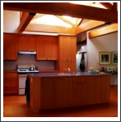

I Owned and managed by Paul Bowden, who brings a wealth of experience from a wide career base ranging from shopfitting for high street chains to project management.
The company's management has a combined total of over 80 years experience in the joinery sector.
I The type of work undertaken by London Joinery includes:
I Bespoke Bars, Counters + Reception Desks.
I Bespoke Wardrobes, Cupboards + Kitchens.
I Purpose made Windows, Doors + Staircases.
I Certified Special Fire Doors.
 Typical bespoke kitchen with island bar.